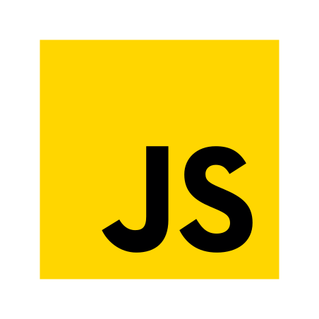

Olá! Sou
David Andrade Engenheiro de Software
Bacharel graduado pela Universidade Federal do Ceará, Campus Russas. Profissional em Análise de Testes e Qualidade de Sistemas. Comprometido em garantir qualidade nas soluções de software e a qualidade nas experiências dos usuários.


Sobre Mim
Engenheiro de Software com domínio no processo de desenvolvimento de sistemas de maneira ágil. Focado em Qualidade de software e do processo de desenvolvimento, com enfâse em testes, verificação e validação funcional e back-end voltada a requisições de API. Experiência e conhecimentos solido na análise de Requisitos e de Sistemas, crucial para garantir que o produto final atenda às expectativas dos usuários e dos stakeholders.
Experiência avançada em desenvolvimento ágil, demonstrando capacidade de adaptação a mudanças e colaboração proativa e eficaz em equipes multifuncionais. Profundo entendimento dos requisitos do projeto, demonstrando habilidade para analisar e interpretar detalhadamente as necessidades do cliente. Experiência em prototipação, destacando a capacidade de criar modelos visuais e funcionais para validar conceitos e antecipar potenciais desafios. Competências recentemente adquiridas em desenvolvimento front-end, fortalecendo a capacidade de análise para garantia da qualidade, ao entender os aspectos técnicos e estéticos da interface do usuário.
Quer saber mais?
Baixar Curriculo
Ferramentas e Tecnologias
Algumas das skill's que domíno e utilizo para garantir a qualidade do sistema, criando soluções criativas, poderosas e com eficácia
-

Java Script
Nescessário para incorporar interatividade às páginas da web, controlar o DOM, responder a eventos e efetuar verificações em formulários.
-

Git
Experiência com sistemas de controle de versão, como Git, e familiaridade com conceitos como commits, branches e pull requests.
-
Cypress.io
Ferramenta de automação de testes frontend para testes de regressão em aplicações web. Possibilitando tambem testar requisições em API's.
-

Docker
Com o docker-compose me possibilita orquestrar nosso ambiente de testes, ou seja, ele acaba centralizando o que me possibilita ter o controle local das aplicações que serão testadas.
-

Postman
Aplicação na qual me permite testar APIs web. Construindo testes automáticos com JavaScript integrado e executa-los com o collection runner, além disso me possibilitando documentar cada teste e resultado.
-

TestLink
Aplicação web desenvolvida para teste de software que visa facilitar testes e possibilita o gerenciamente de casos de testes e registro de resultados.
-

Cucumber
Ferramenta que interpreta e executa as especificações escritas em Gherkin. Onde o Gherkin ajuda a especificar os comportamentos do software e o Cucumber os testa.
-

GitLab
Se trata de um gerenciador de repositório de software baseado em git, com suporte a Wiki, gerenciamento de tarefas e CI/CD. GitLab permite o armazenemento do código em seus próprios servidores, ao invés de servidores de terceiros.
-

Node js
Experiencia com um ambiente de tempo de execução de código aberto que permite executar JavaScript no servidor, permitindo realizar testes em aplicações web com alto desempenho.
-

HTML 5
Possibilita desenvolver layouts adaptáveis e de fácil acesso utilizando HTML semântico para organizar o conteúdo da página. Conhecimento no qual me capacita na acretividade e qualidade na criação dos casos de testes.
-

CSS 3
Framework que estiliza os elementos HTML por meio do CSS, especificando cores, tipos de letra, espaçamentos e disposição para gerar uma apresentação visual atrativa e uniforme.
-

PostgreSQL
Ferramenta de gerenciamento de banco de dados relacional de código aberto e altamente avançado. Organiza os dados em tabelas com relacionamentos entre elas.
Alguns dos meus projetos
Aplicações pessoais e de estudo

Projeto no qual me aprofundei nos conhecimentos de Behavior-Driven Development, BDD, utilizando da linguagem Gherkin e Cucumber, somado com Ruby unido ao Capybara que utiliza da Selenium WebDrive por debaixo dos panos para executar os cenários de testes.

Dando continuidade aos aprendizados, após uns anos de atuação e experiência no mercado de qualidade e testes, finalizei o curso de automação de testes em Cypress no nivél intermediário, implantando meus conhecimentos em Application Programming Interface e Graphical User Interface dentro do Cypress, otimizandos testes funcionais e automáticos em API's
Projeto de estudos, criado para aprendizado com o intuito de mergulhar na automação de testes. Curso da Talking About Testing na Udemy, referente a automação de testes com Cypress. Aprendendo a criar e executar casos de testes automatizados. Note que a versão do cypress é antiga se tratando da 9.5.1.
Aplicação que simula um commerce de produtos nerd geeks, na visão de um admnistrador ou dono de loja para adicionar e exlcuir produtos. Utilizando JavaScript puro para lógica de integração e consumo de API
Se trata de uma aplicação simples refrente a um encriptador de texto, no qual ao inserir um texto uma lógica para encriptar caracteres, ocultando o texto original, possibilitando o usuário copiar o texto oculto e desincriptografa-lo para identificar a mensagem.

Esta aplicação se trata de um pequeno jogo, simples e fácil, referente a descoberta de um número secreto. O sistema aguardará um número e ele o verifica para saber se é o numero da sorte, isso com ajuda de dicas de proximidade referente ao número informado ao número secreto, com auxilio de assesibilidade com voice.

Se trata de um aplicação simples refrente a uma página para um amigo pessoal que tem sua carreira profissional como cantor, portanto é uma página para divulgação e capitação de leeads.

Se trata de um aplicação onde toda a interface é inspirada na página web do próprio Spotify. Um projeto no qual trabalhei para aprender alguns conceitos e estrategias para melhor organizar os componentes HTML. Foi com a imersão para criação desta aplicação que retomei o encanto com desencolvimento e lógica de programação, aperfeiçoando a cada dia minhas técnicas e conhecimentos
Solicite Contato
Gostaria de entrar em contato comigo?
Preencha o formulário abaixo e eu entrarei em contato assim que possível